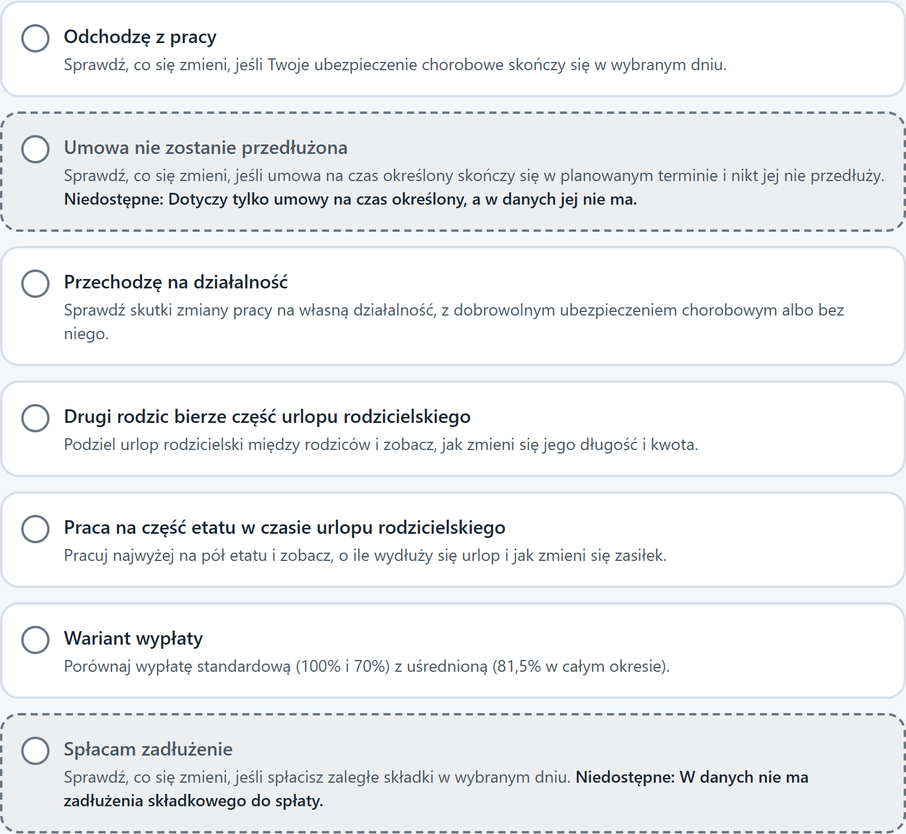

Pomysł · kompletność
„Co jeśli” i porównanie wariantów


Siedem scenariuszy. Silnik liczy drugi raz na zmienionych faktach i pokazuje różnicę w tygodniach, złotych i statusach. Walidacja planu: 9 tygodni nieprzenoszalnych, najwyżej 5 części.
Kompas Rodzica · 2Stosy